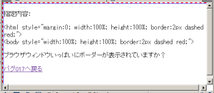

heightプロパティを%値で指定すると、その算出値は要素の横幅に対する%値になってしまう。（bodyやhtml要素のみで発生するバグの可能性あり）
検証ページを参照してください。ここでは、body要素の幅と高さを100%に設定しています。ブラウザウィンドウの高さを変えて、ボーダーが表示領域全体を囲むように表示されているか確認してください（特にウィンドウの幅と高さが大きく違う状態で確認してください）。
キャプチャ後に縮小しています。
Moz1.0.1での表示（標準モード）
MacIE5.xで発生する模様。